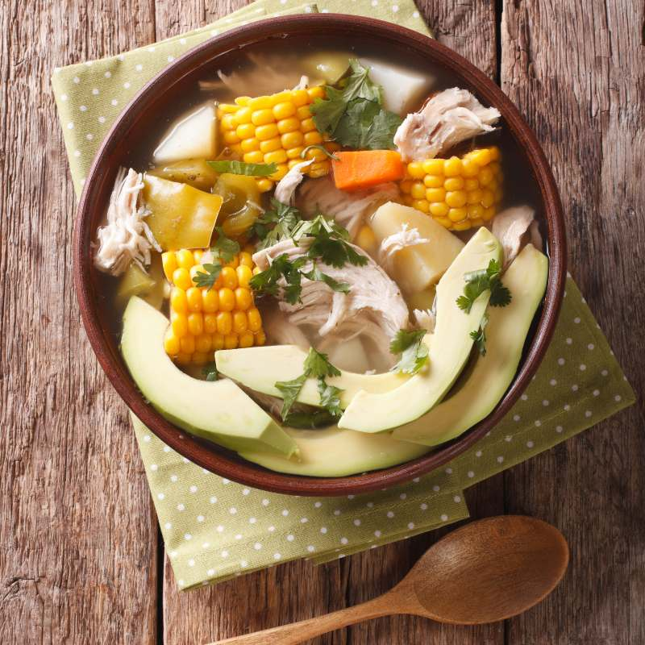
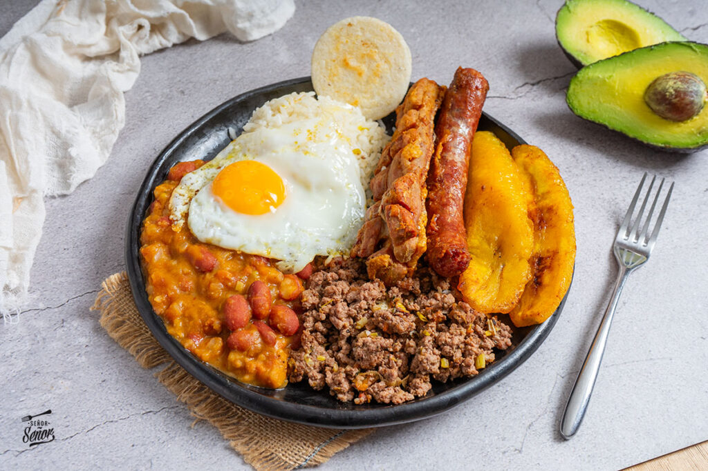
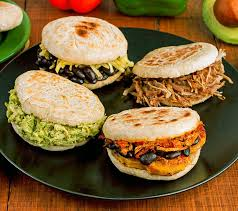

Ajiaco, bandeja paisa y arepas representan su diversidad.

Ajiaco santafereño
Sopa
Ingredientes
- 500 g de pechuga de pollo
- Papa criolla, sabanera y pastusa
- 2 mazorcas en trozos
- Guascas y caldo de pollo
- Alcaparras, crema y aguacate
Pasos
- Cocer el pollo y las mazorcas en el caldo; retirar el pollo cuando esté tierno y desmecharlo.
- Agregar las papas en rodajas y cocinar hasta que unas se deshagan y espesen la sopa.
- Incorporar las guascas y cocinar 10 minutos más; devolver el pollo a la olla.
- Servir con alcaparras, crema de leche y aguacate.

Bandeja paisa
Plato fuerte
Ingredientes
- Frijoles rojos y arroz blanco
- Carne molida y chicharrón
- Chorizo y huevos
- Plátano maduro y arepas
- Aguacate y hogao
Pasos
- Remojar los frijoles y cocerlos con hogao hasta que estén tiernos; preparar el arroz aparte.
- Dorar la carne molida, el chorizo y el chicharrón por separado.
- Freír las tajadas de plátano y los huevos, y calentar las arepas.
- Servir todos los componentes en una bandeja con aguacate y hogao.

Arepas
Pan/acompañante
Ingredientes
- 2 tazas de harina de maíz precocida
- 2 1/2 tazas de agua tibia
- 1 cucharadita de sal
- 1 cucharada de mantequilla
- Aceite para la plancha
Pasos
- Mezclar el agua con la sal y añadir la harina poco a poco.
- Incorporar la mantequilla, amasar y dejar reposar 5 minutos.
- Formar bolas y aplanarlas en discos de aproximadamente 1 cm.
- Cocinar en una plancha engrasada hasta que estén doradas por ambos lados.